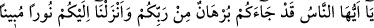
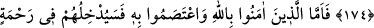

ALLÂH’IN İNDİRDİĞİ
APAÇIK NUR
174- Ey insanlar! Şüphesiz size Rabbinizden kesin bir delil geldi ve size apaçık
bir nur indirdik.
175- Allah’a îman edip O’na sımsıkı sarılanlara gelince, Allah onları kendinden
bir rahmetin ve lütfun içine sokacak ve onları kendine doğru (giden) bir yola
iletecektir.
“Ey insanlar! Şüphesiz size Rabb’inizden kesin bir delil geldi ve” Peygamber (a.s)
vasıtasıyla “size apaçık bir nur indirdik.” Buradaki hitap, bütün mükellefleredir.
“Burhan” ile kastedilen, mûcizelerdir. Apaçık nur ise Kur’ân-ı Kerîm’dir. Yâni bu
demektir ki: Size aklî delilleri ve naklî şâhitleri getirdik, artık bundan sonra ileri
sürebileceğiniz bir mazeret ve bahane kalmamıştır.
Burhan; talep edilen husûsun kendisiyle isbat edildiği şeydir. Kur’an kalplerde îman
nûrunun parlamasına sebep olduğu için “nur” olarak isimlendirilmiştir. Çünkü gözler
ışıkla aydınlandığı gibi dinin hükümleri de Kur’an’la açıklanır.
175- Allah’a îman edip O’na sımsıkı sarılanlara gelince, Allah onları kendinden
bir rahmetin ve lütfun içine sokacak ve onları kendine doğru (giden) bir yola
iletecektir.
Kendilerine gelen burhâna icâbetle “Allah’a îman edip O’na sımsıkı sarılanlara
gelince, nefs-i emmârenin isteklerine ve şeytanın ayartmalarına uymaktan sakınanlara
gelince, “Allah onları” îmanlarından ötürü çektikleri çileler nisbetinde, kazandıkları
sevaplar nisbetinde ve nihayet salih amellerinin karşılığı kadar “kendinden bir
rahmetin” içine sokacaktır. Çünkü onlara amellerinin karşılığını vermek, Allah’ın
rahmetinin gereğidir, yoksa O’na vâcib değildir. Yine onları kendinden bir “lütfun içine
sokacak” lütuf ve kereminden fazlasıyla bol bol ihsan edecektir. Hiç bir gözün
görmediği, hiç bir kulağın işitmediği ve hiç bir beşerin hayal edemediği mükâfâtlar